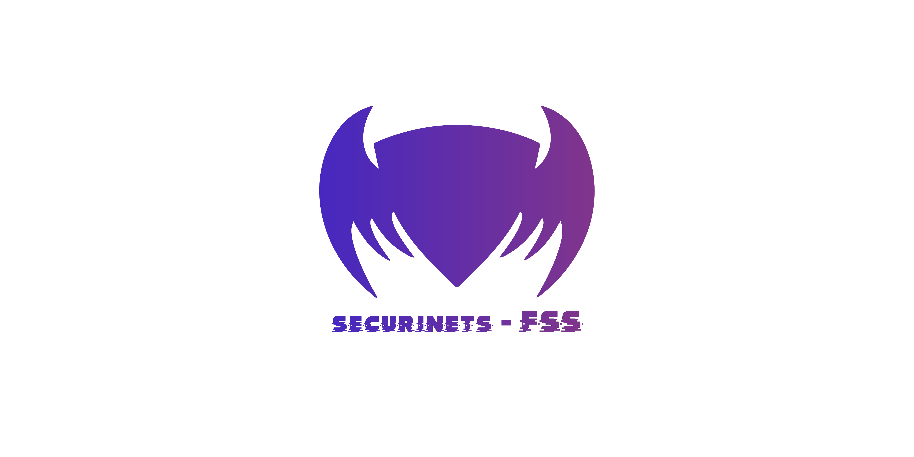

About Me
As a sharp and smart student I have a keen interest in programming, DevOps, Big Data and
Cybersecurity ,as part of extra-curricular activities I participate in clubs, events and workshops. I like to play chess and problem solving in my spare time.
 April, 2023
April, 2023
Company : DK-Soft
.jpg)
I have implemented a comprehensive data catalog
architecture for handling large-scale datasets using
various tools such as Hive, Hadoop, HBase, Kafka,
Solr, ZooKeeper, Apache Ranger, Apache Atlas, and
MySQL.
Skills: Linux, Java
April, 2023
DevOps Project

I implemented a resilient big data architecture by utilizing Infrastructure as Code (IAC), Ansible, and YAML within a professional setting.
Skills: DevOps, Yaml
September, 2022
CO-Founder SECURINET Clubs Fss

In September 2022, in collaboration with my partner Montassar, we proudly founded SECURINET Clubs Fss. With a shared passion for cybersecurity and a vision to empower individuals with knowledge and skills, our goal was to establish a platform where enthusiasts could come together, learn, and grow.
January, 2022
Machine learning Project

In January 2022, I was actively engaged in a project involving model training using Jupyter to detect tax failures. This endeavor aimed to develop an effective solution for identifying and addressing potential errors in tax processes.
Skills: Python, Machine Learning ,